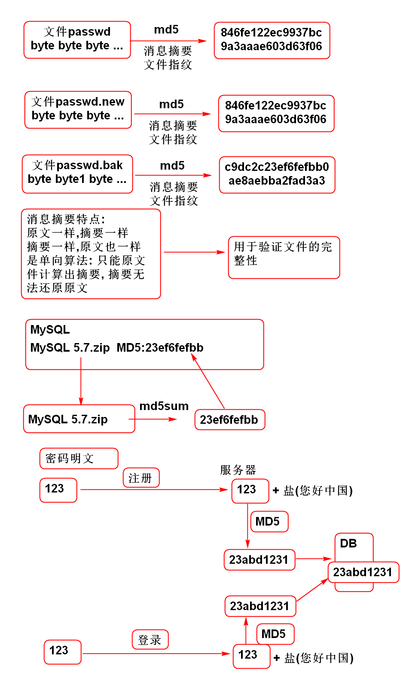

利用MD5进行加密是常见的方法.
MD5 工作原理:

利用 Commons-codec 实现MD5:
导入相关的包:
<dependency>
<groupId>commons-codec</groupId>
<artifactId>commons-codec</artifactId>
<version>1.10</version>
</dependency>
测试MD5算法:
public class UtilTestCase {
@Test
public void testMD5(){
String str = "123";
String salt = "您好中国";
//计算123的摘要
String md5=DigestUtils.md5Hex(str);
//计算123加盐的摘要
String md=DigestUtils.md5Hex(str+salt);
System.out.println(md5);
System.out.println(md);
}
}